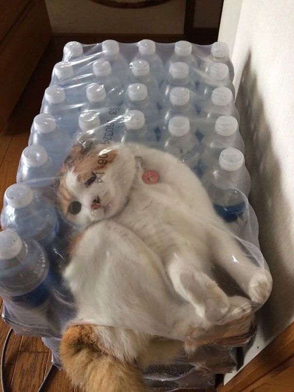
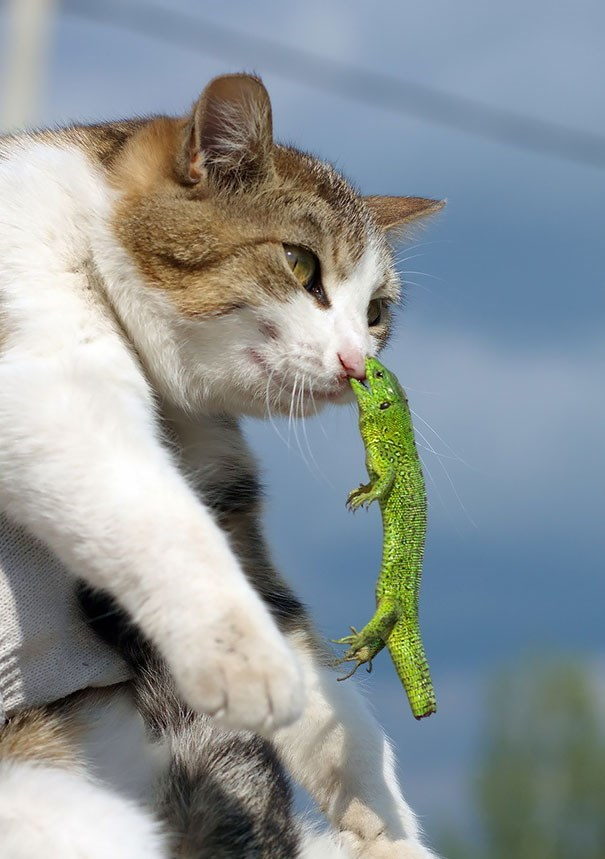

Something To Lighten Your Day...
If I'm really down, nothing beats seeing a heartwarming or relatable image or story. What really gives me a serotonin boost is seeing that cats can be plagued by life's minor inconveniences just like I can.
Going outside or doing something enjoyable to brighten your mood can only go so far, so why not just look at pictures of cats on the internet? It seems to be the latest craze for women over 40 (other than minion memes), so surely it can work for everyone.
 